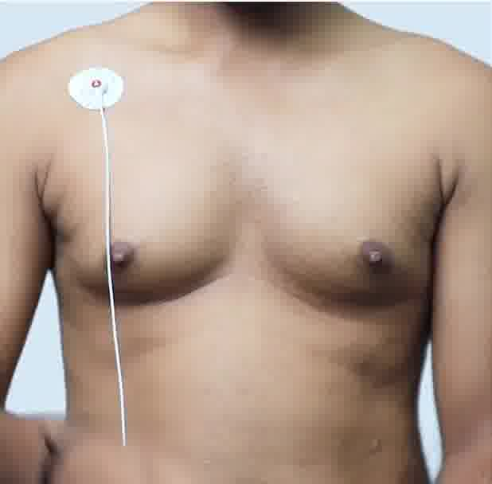
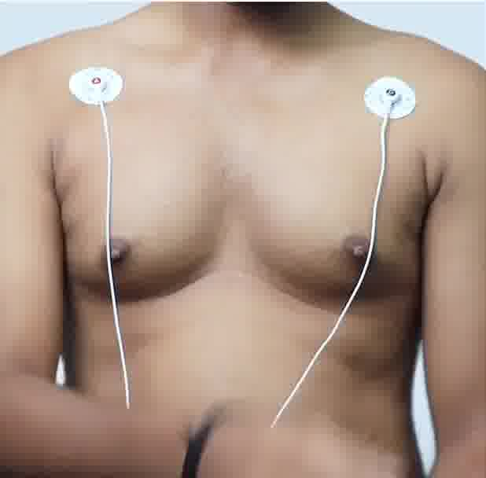
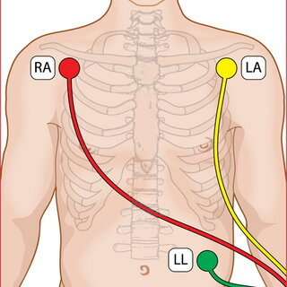

Placed on the right arm, near the shoulder.
Clean the areas where the electrodes will be placed with alcohol wipes or a damp cloth to remove any oils, sweat, or dirt. Ensure that the skin is dry before proceeding.

Placed on the left arm, near the shoulder.
Connect the leads from each electrode to the corresponding ports on the ECG machine. Typically, there are color-coded ports or labels on the machine indicating where each lead should be connected.

Positioned on the left side,the lower part of the rib cage
After the ECG recording is complete, carefully remove the electrodes from the patient's skin. Gently peel them off to avoid discomfort.